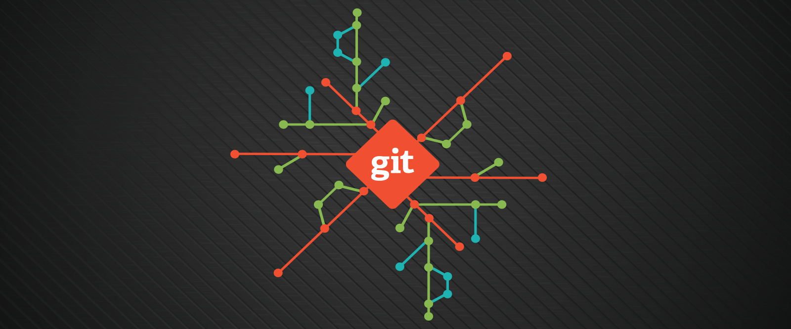

Melhores Praticas
WEB
Bem vindo a melhor escolha de Desenvolvimento
Se quiser escutar uma boa musica enquanto estuda, utilize nosso player do deezer ;)

Como fazer corretamente?
Implantação de Git em projetos, Março 09, 2020
Implantar git dentro de um projeto não é uma coisa facil, se implantado errado, consertar é ainda pior.
Vamos numerar aqui algumas das melhores praticas de versionamento do seu projeto.
Realizar merge em branchs separadas
Sistema de Pull Request
Realizar merge em branchs separadas
Para garantir uma entrag unitaria de desenvolvimento, uma boa pratica do desenvolvimento Git é utilizar uma branch especial para merge de projetos.
Vamos utilizar do exemplo, em uma branch esta contido o conteudo estavel do projeto, e um desenvolveu entregou uma nova funcionalidade dentro dessa branch
Voce como outro desenvolvedor esta fazendo um ajuste simples que deve subir para o ambiente de produção, master, neste momento realizar um merge no ambiente mais estavel pode ocasionar em um conflito
nao desejado, pois voce apenas precisa subir o conteudo simples que esta alterando.
Geralmente uma boa pratica é colocar a Branch mais estavel dentro da sua, mas se voce fizer isso, o seu codigo tera o conteúdo do outro densevolvedor, será que realmente precisamos puxar esse conteudo para nossa branch?
Não!!
Vamos criar uma branch chamada merge{ambiente}, la colocaremos nosso codigo, e o codigo de qa e essa branch será responsavel por realizar o merge para dentro do ambiente de qa, com isso vamos garantir que na nossa branch temos apenas as coisas que nos alteramos
Sistema de Pull Request
Liberar um ambiente estavel para que qualquer desenvolvedor ou estagiario posso colocar seu codigo sem analise não é nunca recomendado
Mesmo que voce confie nesse desenvolvedor, não podemos garantir que ele não realize erros de desenvolvimento, com isso vamos implementar as PRs (Pull Requests)
Toda e qualquer mudança dentro da branch estavel deve passar por uma aprovação e analise de um desenvolvedor mais experiente, com isso, o desenvolvedor ou arquiteto que esta analisando o codigo, pode encontrar problemas ou arrumar soluções para regras de negocio.
Teixeira, Gabriel. Desenvolvedor Full Stack (Backend, Frontend)
Tags
HTML
Bill gates
SAP
JS
Salesforce
Transmissão
Git
REST
SOAP
Pipeline
Versionamento
Computação
Java
Games
Nome do Usuario:
Comentario:
Poderiam postar um explicando como montar um sistema de merge do inicio?